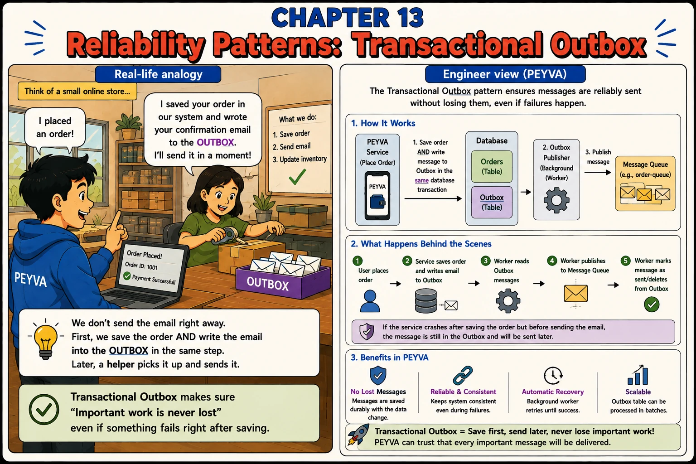

Chapter 13
Reliability Patterns: Transactional Outbox
We don't send the email right away. First, we save the order and write the email into the outbox, in the same step.

1. Concepts
- Outbox Table. A table in the same database as the transfer, holding messages that still need to be published.
- Same Transaction. The transfer and the outbox row are written together, inside the transaction from Chapter 7: never as two separate steps.
- Outbox Publisher. A background worker that reads unsent outbox rows and publishes them to the queue, then marks them sent.
- At Least Once. A crash between publishing and marking the row done sends the message twice. The receiver has to cope, which is what Chapter 8 built.
2. Build It Hands-on Building in Go, change in Chapter 0
- The Courier learns to never lose work handed to it.
Contrastive Chain-of-Thought. Naming the naive design stops the assistant rediscovering it, and forces it to say what its version does differently.
Documented in The Prompt Report: Few-Shot CoT, Contrastive CoT · asking price for this chapter, about 448 tokens
Every prompt below is copied with these rules
Build this in Go, standard library only.
Code in peyva/<component>/, one folder per component.
Money: exact decimal or integer minor units, never floating point, two decimal places.
The goal and invariants are in peyva/goal.md.
The goal and invariants are in peyva/goal.md.
1 of 2 Build~295 tokens
- Two designs, one of them named as wrong.
The Courier picks up work from memory. If the process dies between the payment committing and the work reaching the Courier, that work is gone and nothing in the system knows it's missing. Reasoning I want you to reject: commit the payment, then hand the work to the Courier, because the gap between them is too small to matter. The gap is not a probability, it is a window, and a crash inside it loses work with no record that anything is owed. Reasoning I want you to follow: anything that must happen because a payment happened is recorded in the same atomic unit as the payment. One commit, or nothing. Build the second one. The Teller records the Courier's pending work in the same atomic unit that moves the money. The Courier collects from that record, and marks each item done once it's delivered. Done when killing the process right after a payment leaves the work durable and uncollected, and restarting the Courier still delivers it.
2 of 2 Contrast~153 tokens
- Where the two designs part company.
You built the Teller recording the Courier's pending work in the same atomic unit as the payment, instead of handing it over after the commit. Contrast the two designs directly: name the exact instant at which the rejected one loses work and yours doesn't. Then tell me what happens if the Courier dies after delivering but before marking the item done, and whether that is acceptable for a notification. Done when I can point at the single instant that separates the two designs, and I know what your version does in the one case it still handles imperfectly.
Quick tip: If it isn't written in the same transaction as the data change, it can be lost.